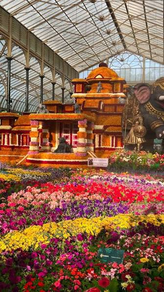
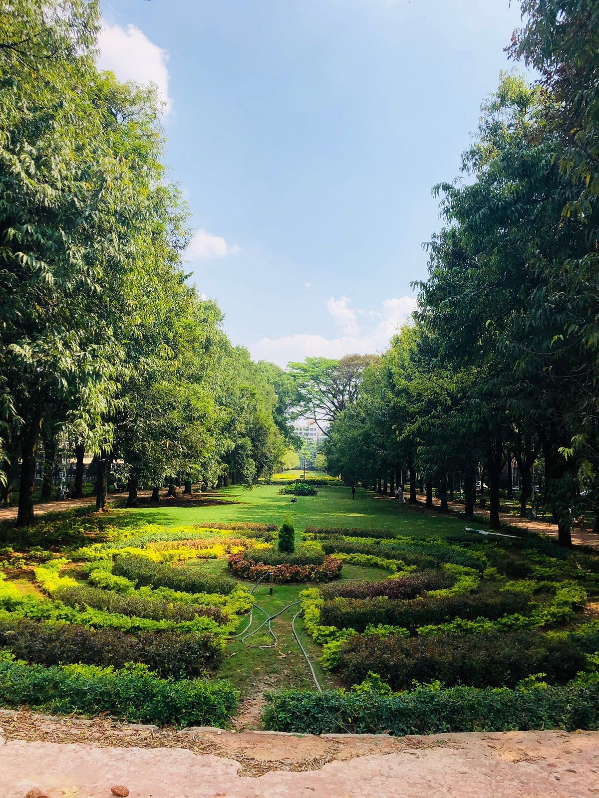
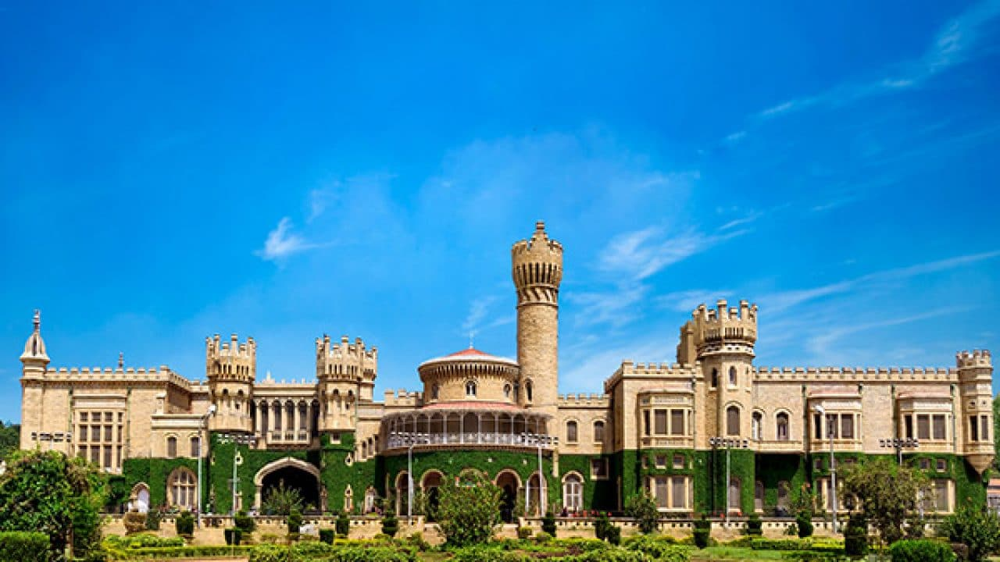
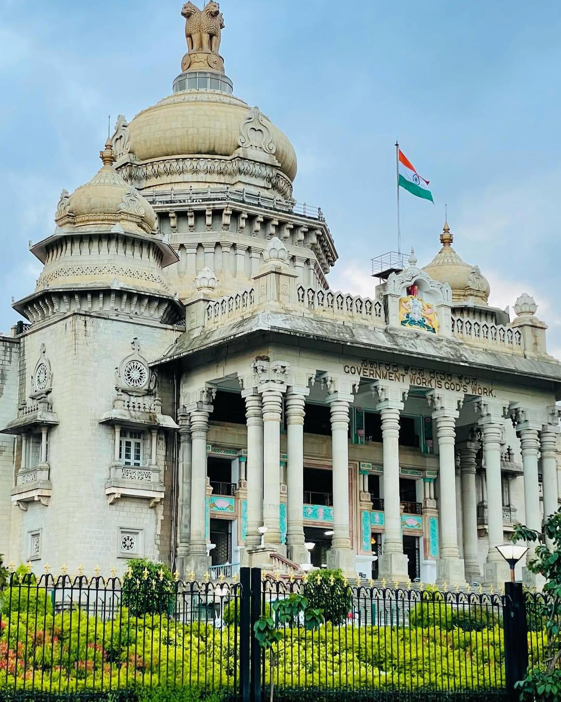
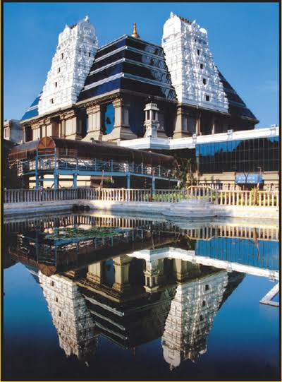
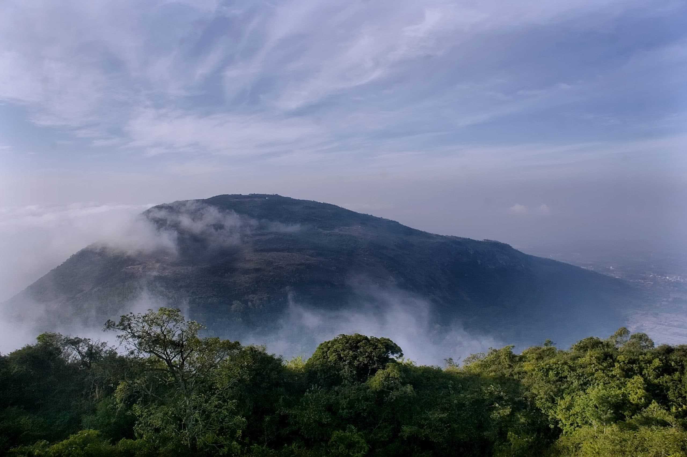
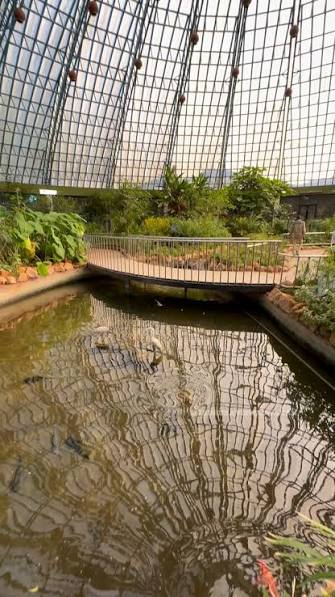
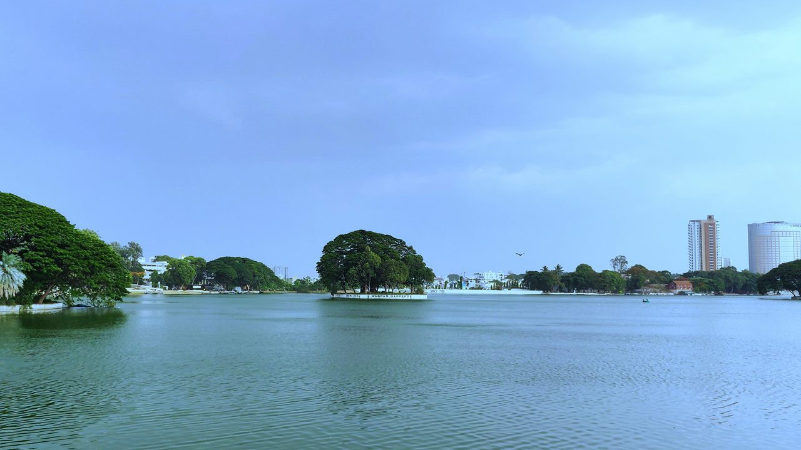
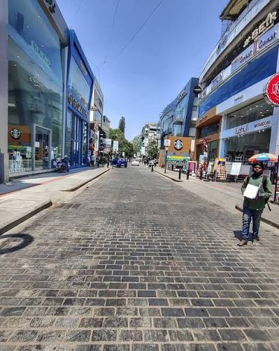
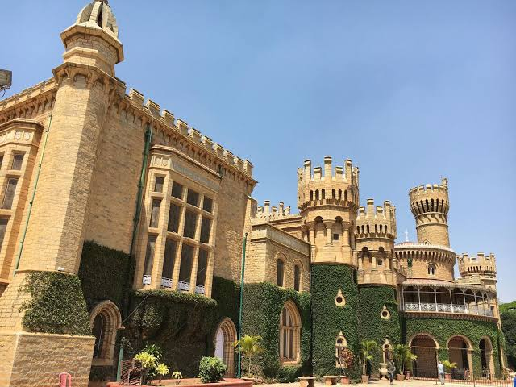

The Garden City of India
Bangalore, also known as Bengaluru, is one of the most beautiful and vibrant cities in India. It is famous for its pleasant weather, green parks, beautiful gardens and modern lifestyle. The city has a unique combination of nature, history, technology and culture. Places like Lalbagh and Cubbon Park give the city a refreshing natural atmosphere, while Bangalore Palace and Vidhana Soudha show its rich history and architecture. Bangalore is also known for its lively streets, cafes, restaurants and cultural activities. From peaceful lakes and gardens to busy streets and historical buildings, Bangalore has something interesting for everyone.

Lalbagh Botanical Garden

Cubbon Park

Bangalore Palace

Vidhana Soudha

ISKCON Temple

Nandi Hills

Bannerghatta National Park

Ulsoor Lake

Church Street

Tipu Sultan's Summer Palace